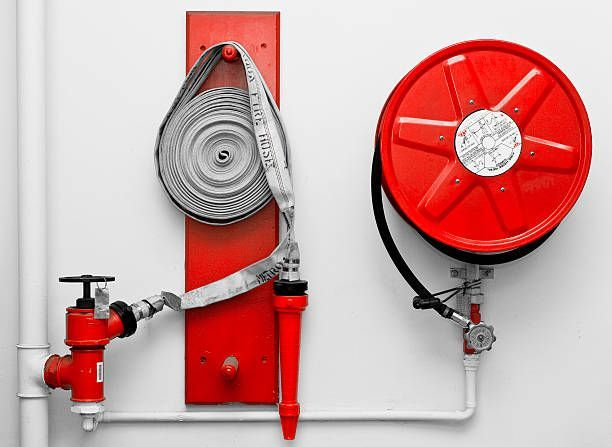

Safer workplaces.
Resilient organizations.
To be a trusted partner for organizations seeking dependable and professional Fire, Safety & Risk Solutions.
FIRE · SAFETY · RISK
Your trusted partner in fire, safety and risk solutions. Protecting people, assets, operations and business continuity.
SFSBT Services Private Limited is a professional Fire, Safety & Risk Solutions company committed to helping organizations protect their people, assets, operations and reputation.
We provide practical solutions designed around the specific requirements of each client and workplace. Our approach combines professional expertise, systematic risk assessment, practical recommendations and safety awareness to help organizations prevent incidents, prepare for emergencies and continuously improve safety performance.
Our commitmentTo be a trusted partner for organizations seeking dependable and professional Fire, Safety & Risk Solutions.
Move from reactive safety practices to a more proactive, structured and risk-based approach.
Prevention, protection systems and emergency readiness.
Practical workplace safety services shaped around your operations.
Identify. Assess. Control. Improve.
Planning, people, procedures and preparedness.
Customized programs for employees, supervisors, managers, contractors and response teams.
Fire safety support from supply and installation through ongoing maintenance.
Environmental and water treatment solutions across plant types and related operations.
Independent inspection and assessment support for industrial sites and projects.
Consultancy and compliance support for fire safety and project EHS requirements.
Optional service line for temporary site and shutdown safety support.

An effective emergency response depends on planning, people, procedures and preparedness. We support organizations in strengthening response capability and minimizing operational disruption.
Scalable solutions can be customized to the operational environment, hazards and requirements of different sectors.
Safety assessments, inspections, risk management, emergency preparedness and employee programs.
Construction safety support, hazard identification, work-at-height awareness, site inspections and preparedness.
Fire safety, emergency evacuation, staff awareness, risk assessment and workplace safety preparedness.
Fire safety awareness, evacuation planning, drills, inspections, risk assessments and employee awareness.
Fire prevention, operational risk assessment, workplace safety, emergency preparedness and inspections.
Risk assessment, safety management, emergency preparedness and operational safety support.
Our audit and inspection methodology focuses on identifying gaps and providing practical corrective actions.
Understand the workplace, activities and existing controls.
Identify hazards and potential vulnerabilities.
Assess risks and the effectiveness of existing controls.
Provide practical improvement recommendations.
Support corrective action and continuous improvement.
At SFSBT Services Private Limited, we believe effective safety management goes beyond compliance. It is about creating workplaces where people understand risks, organizations are prepared for emergencies and safety becomes part of everyday operations.
Let's build a safer future together.
At SFSBT Services Private Limited, we believe competent, committed and professionally driven people are fundamental to building a safer and more resilient industrial environment.
As our organization develops its capabilities across fire safety, industrial safety, EHS, risk management, compliance and related professional services, we recognize the value of people who bring technical competence, integrity, accountability and a strong commitment to safety.
Incorporated on 23 September 2024 · Registered in Durgapur, West Bengal
Depending on business requirements and future opportunities, career paths may include:
Professionals seeking to build a career in this sector can strengthen capabilities in:
Depending on the nature and level of the position, relevant qualifications may include:
Additional qualifications, practical field experience, statutory-compliance knowledge, auditing capabilities and industry-specific certifications may be an advantage for specialized positions.
We welcome professionals who demonstrate:
Qualified and motivated professionals may submit a profile for consideration against suitable current or future requirements. Career areas above are potential paths; no specific vacancies are listed here.
Join us in creating safer workplaces, strengthening compliance and building a culture of prevention and preparedness.
Connect with SFSBT Services Private Limited to discuss your organization's fire, safety and risk requirements.
B-4, Bidhan Park Sector-1, Fuljhor,
P.O. Durgapur, Dist. Paschim Bardhaman,
Pin 713206, West Bengal, India